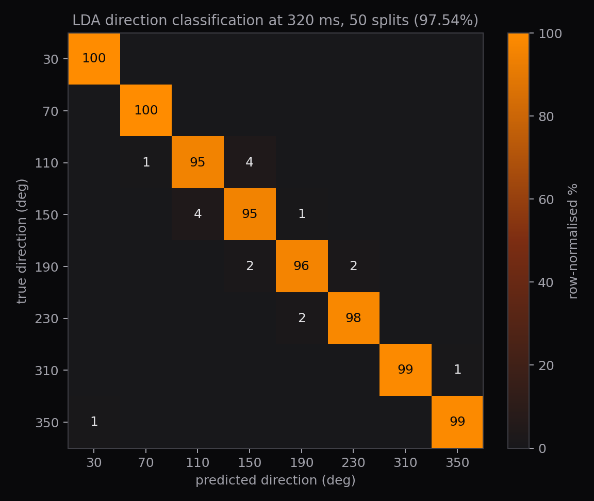
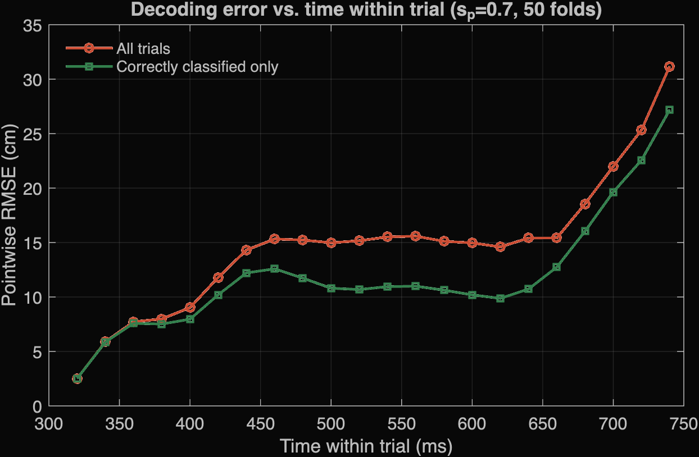
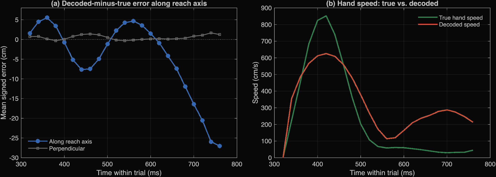

Brain-machine interface neural decoder
A causal decoder that turns 98 motor cortex spike trains into a reach direction and a hand trajectory in real time. LDA picks the direction at 97.54% accuracy and a Kalman filter per direction tracks the hand to 13.2 cm RMSE.
Question
How to causally estimate a monkey's hand position from 98 motor neurons during an 8-direction centre-out reaching task.
Approach
Spikes are smoothed with an alpha-function kernel (τ = 50 ms) and averaged into 20 ms bins. The reach direction is read from the first 320 ms by linear discriminant analysis with Ledoit-Wolf shrinkage of the covariance, which was needed because there are too many features but few trials per class. The trajectory then is predicted by one of eight direction-specific Kalman filters on position and velocity, with the velocity damped more when the decoded hand is slow so that it stops nearer to the target.
Results
Direction classification reached 97.54% over 12 000 test classifications, with every error to a neighbouring direction, as predicted by the cosine like tuning of motor neurons. End-to-end RMSE was 13.22 ± 1.28 cm, falling to 9.7 to 10.9 cm in every direction once misclassified trials are excluded, so the directions with high error are a classification problem, not a tracking one.

The remaining error has a shape in time. Pointwise RMSE ramps from about 1 cm at 320 ms as the filter initialises, sits on a plateau near 15 cm from 460 to 660 ms, then climbs steeply to about 30 cm by 740 ms. To isolate the error of the Kalman filter, the error was recomputed on the correctly classified trials. The largest difference was in the plateau in the middle of the trajectories, falling by 4 cm, such that most of the late error is induced by the regressor and not the classifier.

Projecting the error onto the reach axis shows where the error lies. Perpendicular to the reach it stays within ±2 cm, so the direction is right. However, along the reach it drifts ahead of the hand to about 25 cm by 740 ms. The cause is speed estimation, the hand peaks near 850 cm/s at 420 ms and is below 50 cm/s by 580 ms, while the decoded hand peaks lower, at about 620 cm/s, never decelerates fully, and is moving again at 280 cm/s while the real hand is still. A constant-velocity model has no notion of a target, and damping scaled to the decoded speed weakens exactly when that estimate is wrong.

What I learned
Splitting the error up before trying to reduce it. Breaking RMSE down by direction, by classification outcome, by time within the trial and by axis turned one number into three separate causes, each with its own fix, and showed which one (the endpoint overshoot) the damping had only partly dealt with.
Choose a model by argument, then validate the argument. The theory of cosine tuning says a population vector decoder should work well here, but it did not. Therefore, theory does not always apply on real-life problems, and requires implementation for trial and error.